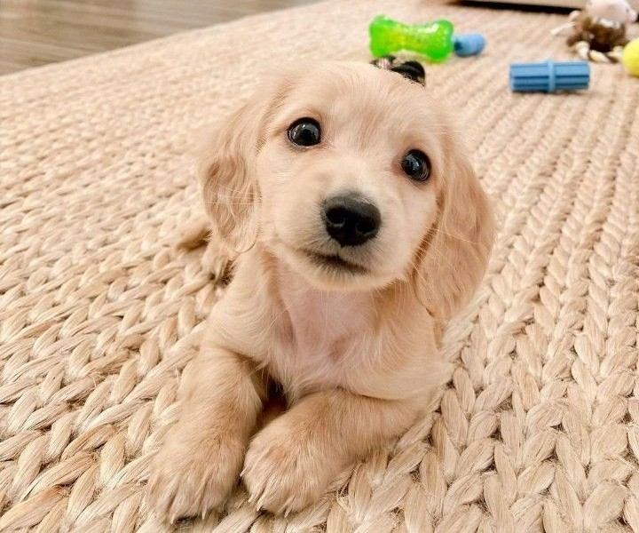
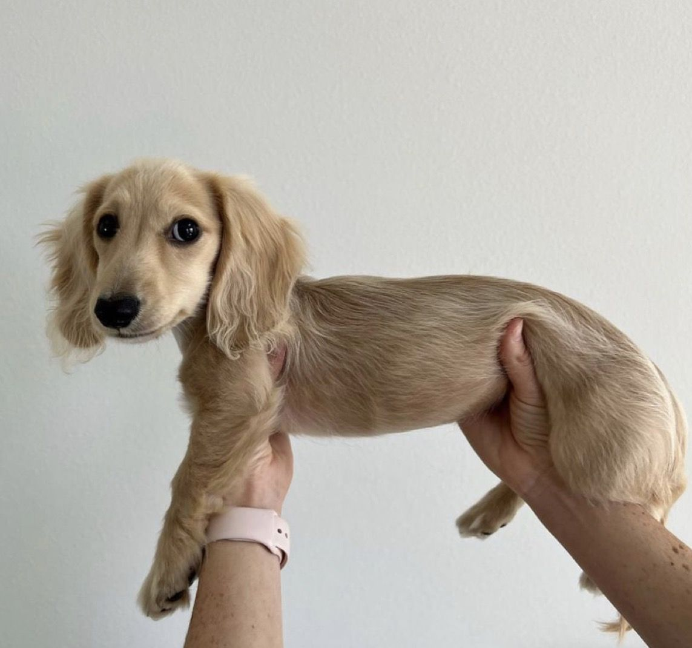
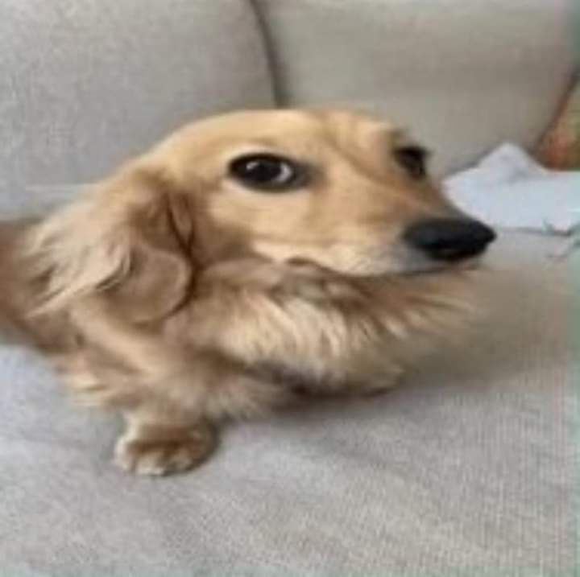
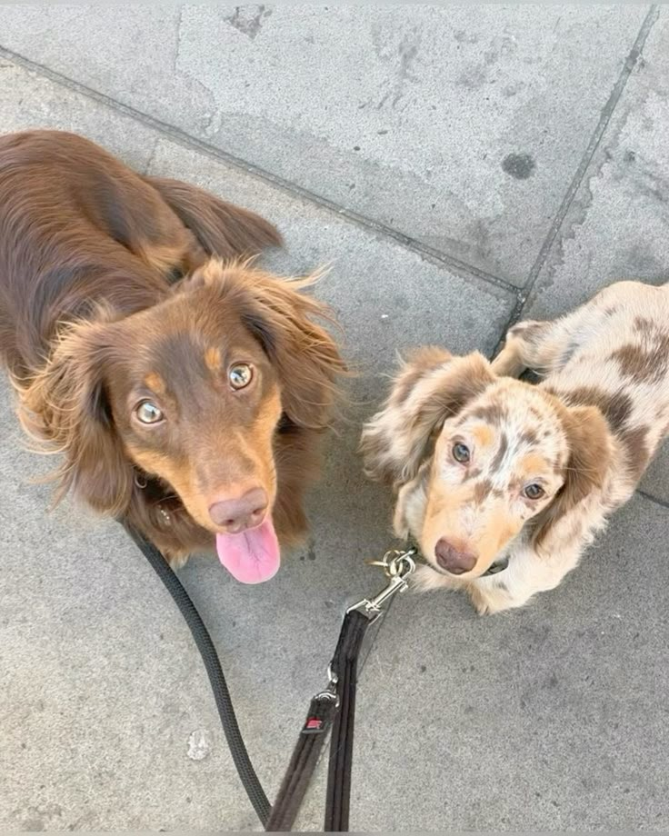
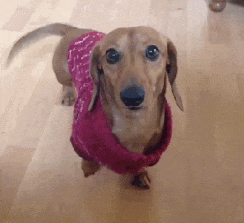
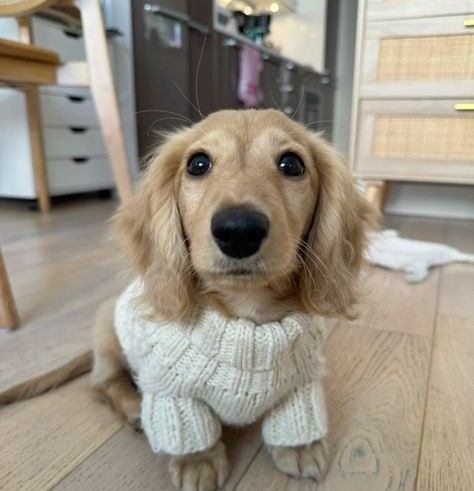
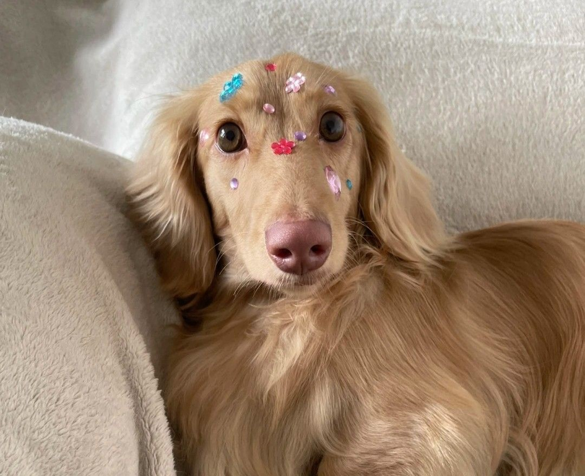
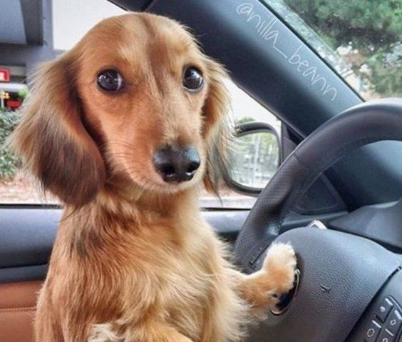
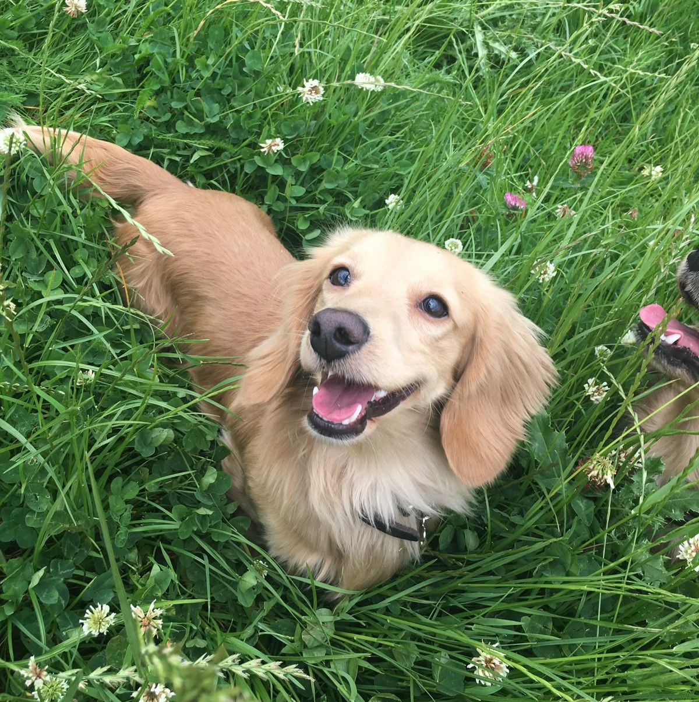

1. Компания и преданность
Абсолютная преданность
Таксы невероятно привязываются к хозяину или семье, становясь настоящим «тенью». Они будут следовать за вами из комнаты в комнату, участвовать во всех делах и дарить чувство, что вы никогда не одиноки.

Эмоциональная поддержка
Таксы чутко улавливают настроение и способны поднять его в трудную минуту. Общение с таксой снижает стресс и уровень тревоги, даря вам позитивные эмоции каждый день.
2. Практические преимущества

Компактный размер
Идеально подходят для квартиры. Им не нужно много пространства, они с комфортом устроятся даже в небольшом жилье, не занимая много места.
«Долгожители»
При хорошем уходе таксы живут 12-16 лет и более, а значит, вы получаете верного друга на очень долгий срок, который будет с вами долгие годы.

Отличные сторожа
Несмотря на размер, таксы — бдительные и бесстрашные охранники. Они обязательно предупредят громким лаем о любом подозрительном шуме за дверью.
3. Характер и интеллект

Яркая индивидуальность
С таксой не бывает скучно! Они остроумны, любопытны, обладают чувством юмора и часто ведут себя как «большие собаки в маленьком теле».
Высокий интеллект
Они легко обучаются, но могут быть и хитрыми. Дрессировка с ними — это увлекательный процесс, требующий находчивости и терпения.

Активный образ жизни
Таксы, особенно стандартные, нуждаются в регулярных прогулках. Это отличный мотиватор для хозяина чаще бывать на свежем воздухе и гулять.
4. И еще немного фото будущей Сьюзи




Интересные факты о таксах
Историческое предназначение
Таксы были выведены в Германии более 300 лет назад для охоты на барсуков и других норных животных, что объясняет их длинное тело и короткие лапы.
Разнообразие окрасов
Таксы бывают разных окрасов: рыжие, черно-подпалые, шоколадные, мраморные, тигровые и даже кремовые (светлые).
Три размера
Существуют стандартные, миниатюрные и кроличьи таксы, которые отличаются не только размером, но и характером.
Готовы к новому другу?
Если вы убедились, что такса — идеальный питомец для вашей семьи, нажмите на кнопку ниже и сделайте первый шаг к счастливой жизни с этим удивительным созданием!